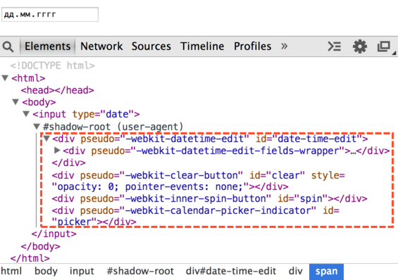

Спецификация Shadow DOM является отдельным стандартом. Частично он уже используется для обычных DOM-элементов, но также применяется для создания веб-компонентов.
Shadow DOM – это внутренний DOM элемента, который существует отдельно от внешнего документа. В нём могут быть свои ID, свои стили и так далее. Причём снаружи его, без применения специальных техник, не видно, поэтому не возникает конфликтов.
Внутри браузера
Концепция Shadow DOM начала применяться довольно давно внутри самих браузеров. Когда браузер показывает сложные элементы управления, наподобие слайдера <input type="range"> или календаря <input type="date"> – внутри себя он конструирует их из самых обычных стилизованных <div>, <span> и так далее.
С первого взгляда они незаметны, но если в настройках Chrome Development Tools выбрать показ Shadow DOM, то их можно легко увидеть.
Например, вот такое содержимое будет у <input type="date">:

То, что находится под #shadow-root – это и есть Shadow DOM.
Получить элементы из Shadow DOM можно только при помощи специальных JavaScript-вызовов или селекторов. Это не обычные дети, а намного более мощное средство отделения содержимого.
В Shadow DOM выше можно увидеть полезный атрибут pseudo. Он нестандартный, существует по историческим причинам. С его помощью можно стилизовать подэлементы через CSS, например, сделаем поле редактирования даты красным:
<style>
input::-webkit-datetime-edit {
background: red;
}
</style>
<input type="date">Ещё раз заметим, что pseudo – нестандартный атрибут. Если говорить хронологически, то сначала браузеры начали экспериментировать внутри себя с инкапсуляцией внутренних DOM-структур, а уже потом, через некоторое время, появился стандарт Shadow DOM, который позволяет делать то же самое разработчикам.
Далее мы рассмотрим работу с Shadow DOM из JavaScript, по стандарту Shadow DOM.
Создание Shadow DOM
Shadow DOM можно создать внутри любого элемента вызовом elem.createShadowRoot().
Например:
<p id="elem">Доброе утро, страна!</p>
<script>
var root = elem.createShadowRoot();
root.innerHTML = "<p>Привет из подполья!</p>";
</script>Если вы запустите этот пример, то увидите, что изначальное содержимое элемента куда-то исчезло и показывается только «Привет из подполья!». Это потому, что у элемента есть Shadow DOM.
С момента создания Shadow DOM обычное содержимое (дети) элемента не отображается, а показывается только Shadow DOM.
Внутрь этого Shadow DOM, при желании, можно поместить обычное содержимое. Для этого нужно указать, куда. В Shadow DOM это делается через «точку вставки» (insertion point). Она объявляется при помощи тега <content>, например:
<p id="elem">Доброе утро, страна!</p>
<script>
var root = elem.createShadowRoot();
root.innerHTML = "<h3><content></content></h3> <p>Привет из подполья!</p>";
</script>Теперь вы увидите две строчки: «Доброе утро, страна!» в заголовке, а затем «Привет из подполья».
Shadow DOM примера выше в инструментах разработки:
Важные детали:
- Тег
<content>влияет только на отображение, он не перемещает узлы физически. Как видно из картинки выше, текстовый узел «Доброе утро, страна!» остался внутриp#elem. Его можно даже получить при помощиelem.firstElementChild. - Внутри
<content>показывается не элемент целиком<p id="elem">, а его содержимое, то есть в данном случае текст «Доброе утро, страна!».
В <content> атрибутом select можно указать конкретный селектор содержимого, которое нужно переносить. Например, <content select="h3"></content> перенесёт только заголовки.
Внутри Shadow DOM можно использовать <content> много раз с разными значениями select, указывая таким образом, где конкретно какие части исходного содержимого разместить. Но при этом дублирование узлов невозможно. Если узел показан в одном <content>, то в следующем он будет пропущен.
Например, если сначала идёт <content select="h3.title">, а затем <content select="h3">, то в первом <content> будут показаны заголовки <h3> с классом title, а во втором – все остальные, кроме уже показанных.
В примере выше тег <content></content> внутри пуст. Если в нём указать содержимое, то оно будет показано только в том случае, если узлов для вставки нет. Например потому что ни один узел не подпал под указанный select, или все они уже отображены другими, более ранними <content>.
Например:
<section id="elem">
<h1>Новости</h1>
<article>Жили-были <i>старик со старухой</i>, но недавно...</article>
</section>
<script>
var root = elem.createShadowRoot();
root.innerHTML = "<content select='h1'></content> \
<content select='.author'>Без автора.</content> \
<content></content>";
</script>
<button onclick="alert(root.innerHTML)">root.innerHTML</button>При запуске мы увидим, что:
- Первый
<content select='h1'>выведет заголовок. - Второй
<content select=".author">вывел бы автора, но так как такого элемента нет – выводится содержимое самого<content select=".author">, то есть «Без автора». - Третий
<content>выведет остальное содержимое исходного элемента – уже без заголовка<h1>, он выведен ранее!
Ещё раз обратим внимание, что <content> физически не перемещает узлы по DOM. Он только показывает, где их отображать, а также, как мы увидим далее, влияет на применение стилей.
Корень shadowRoot
После создания корень внутреннего DOM-дерева доступен как elem.shadowRoot.
Он представляет собой специальный объект, поддерживающий основные методы CSS-запросов и подробно описанный в стандарте как ShadowRoot.
Если нужно работать с содержимым в Shadow DOM, то нужно перейти к нему через elem.shadowRoot. Можно и создать новое Shadow DOM-дерево из JavaScript, например:
<p id="elem">Доброе утро, страна!</p>
<script>
// создать новое дерево Shadow DOM для elem
var root = elem.createShadowRoot();
root.innerHTML = "<h3><content></content></h3> <p>Привет из подполья!</p> <hr>";
</script>
<script>
// прочитать данные из Shadow DOM для elem
var root = elem.shadowRoot;
// Привет из подполья!
document.write("<p>p:" + root.querySelector('p').innerHTML);
// пусто, так как физически узлы - вне content
document.write("<p>content:" + root.querySelector('content').innerHTML);
</script>На момент написания статьи shadowRoot можно получить только для Shadow DOM, созданного описанным выше способом, но не встроенного, как в элементах типа <input type="date">.
Итого
Shadow DOM – это средство для создания отдельного DOM-дерева внутри элемента, которое не видно снаружи без применения специальных методов.
- Ряд браузерных элементов со сложной структурой уже имеют Shadow DOM.
- Можно создать Shadow DOM внутри любого элемента вызовом
elem.createShadowRoot(). В дальнейшем его корень будет доступен какelem.shadowRoot. У встроенных элементов он недоступен. - Как только у элемента появляется Shadow DOM, его изначальное содержимое скрывается. Теперь показывается только Shadow DOM, который может указать, какое содержимое хозяина куда вставлять, при помощи элемента
<content>. Можно указать селектор<content select="селектор">и размещать разное содержимое в разных местах Shadow DOM. - Элемент
<content>перемещает содержимое исходного элемента в Shadow DOM только визуально, в структуре DOM оно остаётся на тех же местах.
Подробнее спецификация описана по адресу http://w3c.github.io/webcomponents/spec/shadow/.
Далее мы рассмотрим работу с шаблонами, которые также являются частью платформы Web Components и не заменяют существующие шаблонные системы, но дополняют их важными встроенными в браузер возможностями.
Комментарии
<code>, для нескольких строк кода — тег<pre>, если больше 10 строк — ссылку на песочницу (plnkr, JSBin, codepen…)